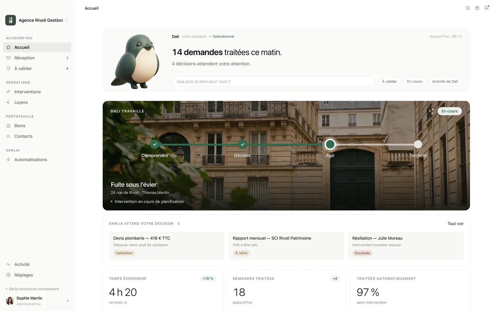
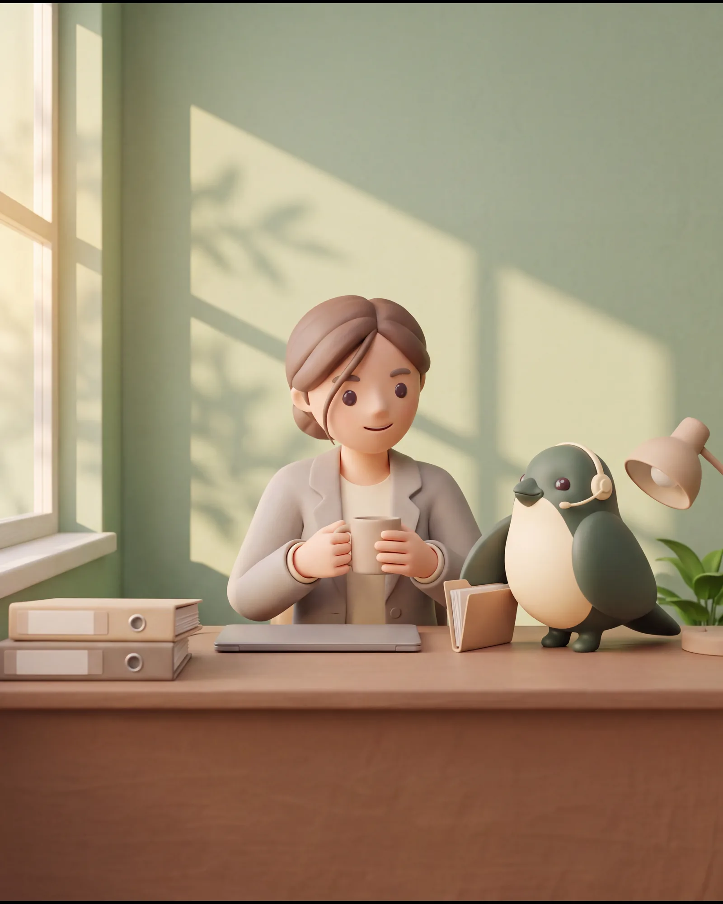
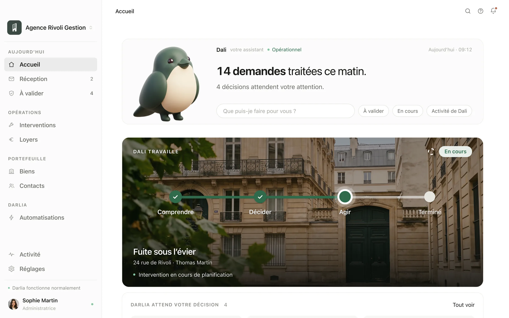

Aujourd’hui Sous l’eau
- Les demandes s’empilent
- On relance, encore et encore
- Interventions suivies à la main
- Des dossiers jamais à jour
- Un poste vacant depuis des mois
Darlia est la plateforme opérationnelle de votre agence. Son assistant intégré, Dali, exécute les tâches répétitives à la place de votre équipe.
Darlia exécute. Votre équipe décide. Déployé en 30 jours.

30 jours
pour déployer Darlia dans votre agence
24 h/24
pour traiter les demandes de votre portefeuille
1 espace
pour piloter votre opérationnel
Solution
Le problème n’est pas leur compétence, c’est le volume. Darlia intègre un assistant, Dali, qui prend en charge le travail répétitif : demandes de locataires, relances, suivi des interventions. Vos gestionnaires retrouvent leur métier.Le problème, c’est le volume. Dali, l’assistant de Darlia, prend le travail répétitif. Vos gestionnaires retrouvent leur métier.

Ce que vous y gagnez
Concrètement, voici le travail que Dali, son assistant, absorbe chaque jour à la place de votre équipe.Le travail que Dali absorbe chaque jour.
Chaque demande est prise en charge et suivie jusqu’au bout, par email, téléphone ou WhatsApp.Chaque demande prise en charge, jusqu’au bout.
Comptes rendus de gérance, attestations, pièces à classer : préparés par Dali, relus par vous avant envoi.Préparés par Dali, relus par vous avant envoi.
Ouverture de l’intervention, contact du prestataire, suivi des devis. Au-delà de vos seuils, la décision vous revient.Devis et prestataires suivis. Au-delà de vos seuils, vous décidez.
Chaque retard est relancé au bon moment et sur le bon ton, jusqu’à l’encaissement.Chaque retard relancé au bon moment.
Demandes, interventions, loyers, documents : tout se suit au même endroit. Vous voyez à tout moment ce que Dali a fait, ce qu’il fait, et ce qui attend votre décision.Tout se suit au même endroit : ce que Dali a fait, et ce qui attend votre décision.
Relié à vos outils

Écrans de l’application de démonstration. Agence, biens et montants fictifs.
Mise en place
Darlia est configuré selon vos procédures, Dali exécute les tâches répétitives, et les décisions importantes restent les vôtres.Darlia suit vos procédures, Dali exécute le répétitif, vous gardez les décisions.
Demander une démonstration 30 minutes en visio, sans engagement.
Tarif
Darlia est d’abord déployé dans votre agence, puis exploité chaque mois. Tout est compris ; seul le nombre de lots que vous gérez change le prix.Un déploiement, puis un abonnement mensuel. Le nombre de lots fait le prix.
Demander une démonstration 30 minutes en visio, sans engagement.Votre tarif s’affiche aussitôt. Sans formulaire, sans adresse e-mail.
Tarifs de lancement, hors taxes.
590€HT par mois
Et une seule fois,3 500 €HT pour le déploiement Darlia.
Sur devis
À cette taille, le prix se calcule ensemble, sur votre portefeuille réel. Parlons-en pendant la démonstration.
Tarifs de lancement, hors taxes.
| Taille du portefeuille | Déploiement Darlia | Exploitation Darlia |
|---|---|---|
| 100 à 199 lots | 2 500 € | 390 € par mois |
| 200 à 399 lots | 3 500 € | 590 € par mois |
| 400 à 699 lots | 5 000 € | 890 € par mois |
| 700 à 999 lots | 7 000 € | 1 290 € par mois |
| 1 000 à 1 499 lots | 9 000 € | 1 690 € par mois |
| 1 500 lots et plus | Sur devis | Sur devis |

Qui est derrière
Avant Darlia, j’ai moi-même géré une activité de location courte durée. Messages, interventions, prestataires, urgences, relances : j’ai vécu de l’intérieur les tâches opérationnelles qui s’accumulent lorsque le portefeuille grandit.
J’ai construit Darlia à partir de ces problèmes.
Je ne pars jamais de la technologie.
Je pars de votre quotidien.
Nacim MezitiFondateur de Darlia · Paris
Questions
Non. Darlia est une plateforme opérationnelle conçue pour travailler avec l’environnement existant de votre agence.
Non. Darlia ajoute une capacité opérationnelle à votre agence : son assistant, Dali, prend en charge une partie du travail répétitif afin que vos équipes puissent se concentrer sur les tâches nécessitant leur expertise et leur jugement.
Dali, l’assistant intégré à Darlia, exécute certaines tâches seul, selon les règles définies avec votre agence. Les actions nécessitant une décision ou une validation restent sous le contrôle de votre équipe.
Le déploiement est conçu pour être opérationnel en 30 jours, sous réserve de la disponibilité des accès, données et informations nécessaires.
Les procédures sont définies avec votre équipe et les actions sensibles peuvent nécessiter une validation. Darlia est conçu pour que Dali exécute le travail sans jamais retirer à votre équipe le contrôle des décisions importantes.
Démonstration
Découvrez quelle part du travail opérationnel de votre agence Dali peut prendre en charge, et la capacité que Darlia vous ajoute.
Le calendrier ne s’affiche pas ? Ouvrir la page de réservation